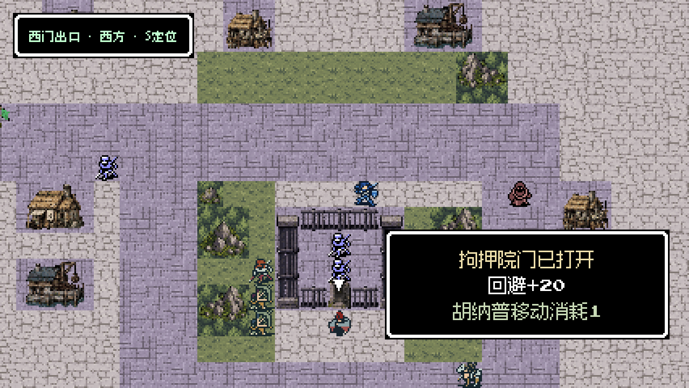
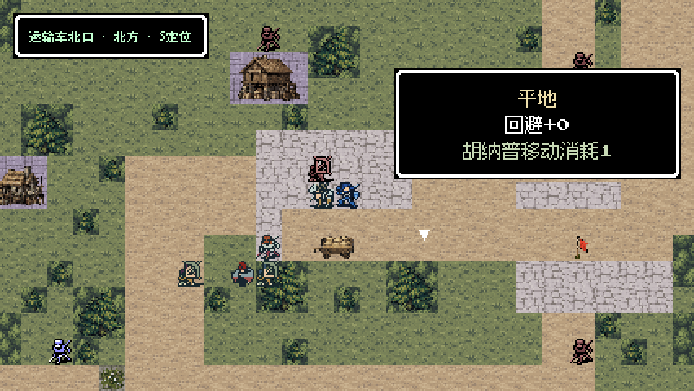
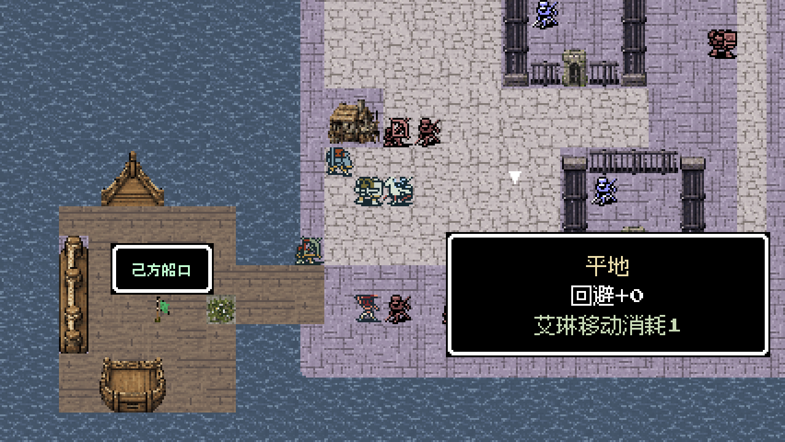
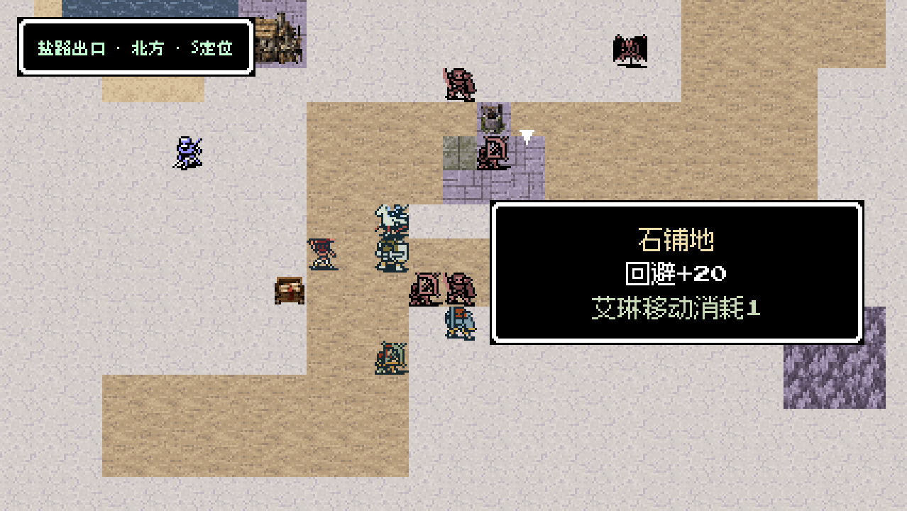
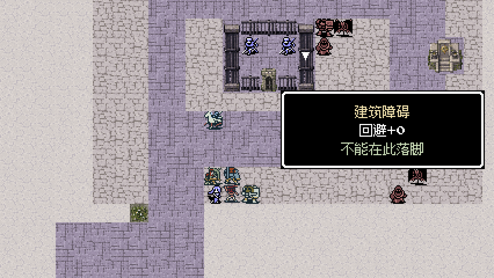
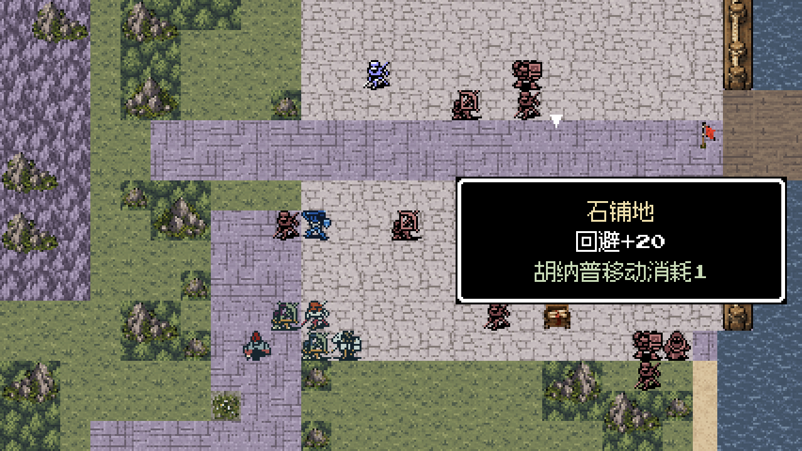
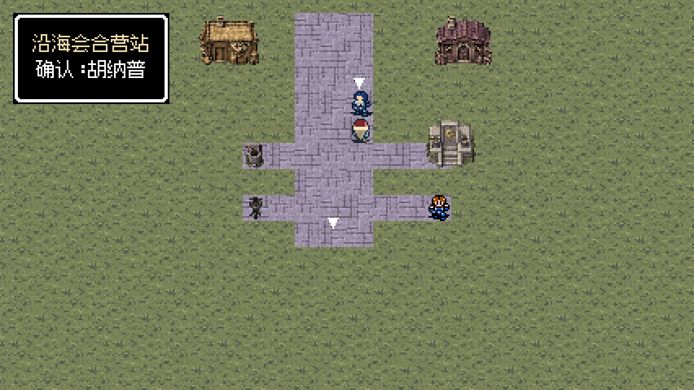
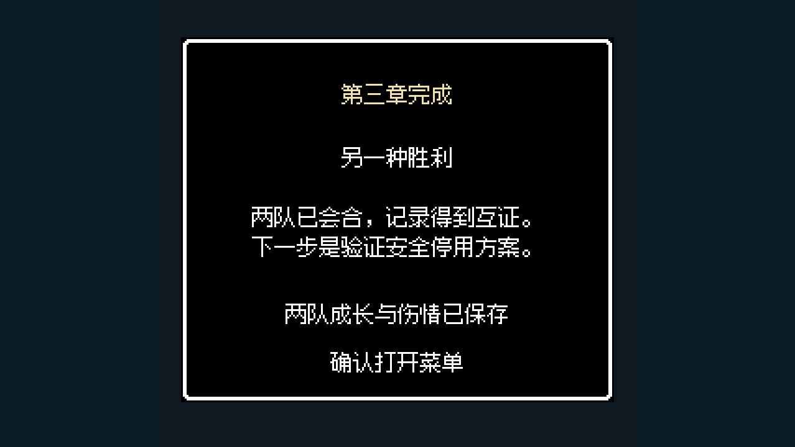

第三章 · 另一种胜利
0.8.0 · 西街与码头脱围、两路调查、两条救援支线、沿海营站会谈。以下8张来自真实按键试玩存档的游戏视口；保留当前人物动画与实际伤情，没有改属性或强制判胜。
第一轮走通8场，修复后从真实检查点续接；第二轮重玩西街、截运与提炼院，并检查营站交接、共享救治和标题续玩。另有33张明确标记的地图/据点视觉夹具，未把它们算作自然试玩。

西街救援：拘押院南门已打开，居民沿街道向西门撤离。真实试玩存档 · M31 · 第10回合 · 后台 Godot 视口
军需大道：控制运输站后截停车辆，车道与运输车位置对应。真实试玩存档 · M32 · 第6回合 · 后台 Godot 视口
码头脱围实战：清理南北扣押区，沿跳板回到西南己方船。真实试玩存档 · F31 · 第4回合 · 后台 Godot 视口
盐路实战：水井、干道与侧翼术士形成明确的通行选择。真实试玩存档 · F32 · 第4回合 · 后台 Godot 视口
提炼院实战：术士工房、调节记录与阵台分别交互。真实试玩存档 · F33 · 第4回合 · 后台 Godot 视口
沿海石堡实战：投送码头连着工房，堡主与格曼分别处理。真实试玩存档 · M33 · 第4回合 · 后台 Godot 视口
两队实际抵达营站并完成会谈，开放共享泉液和当面物资交接。真实试玩存档 · F33 · 第1回合 · 后台 Godot 视口
第三章真实通关记录：另一种胜利。真实试玩存档 · F33 · 第1回合 · 后台 Godot 视口通关记录与验证范围
验收汇总 · 素材尺寸与实际大小 · 视觉夹具记录 · 规则与存档检查 · 第二轮据点检查
后台捕获退出时仍有资源引用清理警告。本次未改人物移动与战斗动画，也未实现第四章。